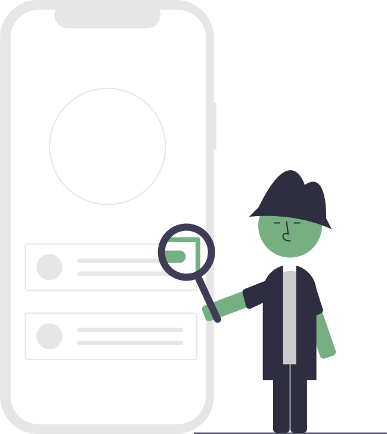

Ideas for Recycling your electronics!
Give to your friends' kiddos
We all remember the nostalgia and memories associated with our first console, our first computer game... What if we passed it on to OUR KIDS, or our friends' kids? If you do that, it is low-cost, low-hassle, and provides kids an experience they will remember, too.
Replace parts (or operating system) one-by-one
Remember those nerds in school who built computers for fun, maybe even sold them? It might be expensive, but perhaps you can refurbish devices you have on hand and replace the parts when that next paycheck comes in.
Donate to Afterschool initiatives or drives!
Programs such as Adopt an Angel, Operation Backpack, and donating to charities/orphanages are a great way to give up your electronics, and perhaps these organizations can make use of these products. Also, smaller, local food pantries might let patrons use these electronics for resumes and job hunting!
Use it for Coding or Basic Daily Living
Software Development, even as a hobby, is SUPER hot right now. Most coding programs don’t take up much space. Even if you aren’t into that you can use it for basics like for YouTube videos, school, or for accessing certain websites.
See if you can donate on your mission trip or to a Homeless Shelter
It is imperative that access to a basic computer is possible. Many don’t have that luxury in most parts of the world. if we help bridge the gap and give to a shelter, orphanage, or on our Mission Trips abroad, that will help people get more accessibility to the internet and to tech.
DIY Projects with old technology
If we look on websites like Pinterest, eBay, and etsy, people are REALLY crafty. Maybe you can take inspiration and make a fishtank from your old iMac Monitor, or make jewelry from old AOL Internet Disks. Also recommended: use old WiiMotes or DS devices as Chachkis for your aesthetically pleasing bedroom!
